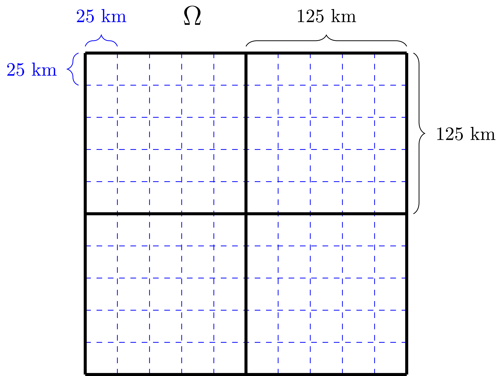

Problem 1: Static Thickness Estimation#
The problem#
Let \(h_i: \Omega \to \mathbb{R}\) be a function describing sea ice thickness over the domain \(\Omega\). The sea ice thickness function \(h_i\) is discontinuous with infrequent but potentially large jumps at the interface between water and ice and different ice types, such as first-year and multi-year ice. Our goal is to estimate \(h_i\) given different observation modalities. These are not observations of the sea ice thickness \(h_i\), but related to the snow depth \(h_s\), sea ice freeboard \(h_{if}\) (the extension of sea ice above sea level not including the snow depth), and total freeboard \(h_f\) (the extension of sea ice above sea level including the snow depth), where
holds. Below, we provide a schematic of the situation.

Schematic of snow-covered first-year and multi-year sea ice floes in hydrostatic equilibrium and the main variables used to derive sea ice thickness \(h_i\): The total freeboard \(h_f\), the ice freeboard \(h_{if}\), and the snow depth \(h_s\)
Prior knowledge/assumptions about the sea ice thickness#
The simplest reasonable assumption is that the sea ice thickness \(h_i\) is a piecewise constant function. The infrequent jumps occur at the interface between water and sea ice and between different sea ice types, such as first-year and multi-year sea ice. If one wants to take into account that multi-year sea ice has a much rougher surface than first-year sea ice, then this could be modeled by \(h_i\) being a discontinuous but piecewise smooth function with small but high-frequency variations in regions of multi-year ice. Finally, the sea ice thickness function \(h_i\) should be nonnegative with zero values translating into the absence of sea ice (at such a location there is only sea water).
Connecting sea ice thickness to freeboard#
It is often not possible to directly obtain observations of the sea ice thickness \(h_i\). Instead, we rely on data of the total and sea ice freeboard, \(h_f\) and \(h_{if}\), from which we then have to derive the sea ice thickness. In [Petty1979] and [Kurtz2011], the sea ice thickness \(h_i\) is calculated respectively as
assuming the sea ice and water are in hydrostatic equilibrium. (The sea ice and water being in a hydrostatic equilibrium means that they are at rest. This occurs when external forces, such as gravity, are balanced by a pressure-gradient force.) The two formulas are equivalent since \(h_f = h_{if} + h_s\), In (2), \(\rho_w\) is the density of water, \(h_s\) and \(\rho_s\) respectively are the snow depth and density, and \(\rho_i\) is the bulk density of sea ice. The snow depth and density as well as the water and ice density are discussed in more detail below (Ancillary variables and data).
Observed data#
Altimetry satellites can provide us with data on the total and sea ice freeboard, which can then be connected to ice thickness via (2).
CryoSat-2 data#
The Cryogenic Satellite 2 (CryoSat-2) is a research satellite of the European Space Agency (ESA) that provides data about the polar ice caps since 2010 [Kurtz2014], [Hendricks2021]. CryoSat-2’s main instrument is an interferometric radar range-finder, which measures the height difference between the upper surface of floating ice and surrounding water. For the electromagnetic frequency range used by CryoSat-2, the surface return from sea-ice-covered regions is often assumed to be from the snow-ice interface.

CryoSat-2 thus provides data of sea ice freeboard \(h_{if}\) (not including the snow depth \(h_s\)). Following [Kurtz2014], the final processed data provided by CryoSat-2 is generated by first calculating the mean freeboard on 25 km polar stereographic grid and then smoothing the data by taking the average value for all points within \(\pm2\) grid points. This effectively reduces the spatial resolution to 125km.
{kind=link}
Remark 1#
It was shown in laboratory experiments [Beaven1995] that the snow-ice interface is the dominant reflecting surface for CryoSat-2. The 2008 CryoVEx field experiment [Willatt2011] further showed that when cold, dry snow is present, 80% of Ku-band radar returns were closer to the snow-ice interface than the air-snow interface. However, [Willatt2011] also demonstrated that during the CryoVEx 2006 experiment, when warm surface temperatures and complex snow stratigraphy were present, only 25% of Ku-band radar returns were closer to the snow-ice interface. The assumption of the dominant radar return being from the snow-ice interface needs to be considered on a regional and seasonal basis.
Remark 2#
CryoSat-2 can also retrieve the roughness of the scattering surface. This might allow one to classify first-year and multi-year ice, which can then be used to inform the sea ice density and snow depth.
ICESat-2 data#
The Ice, Cloud, and Elevation Satellite 2 (ICESat-2) is a research satellite of the National Aeronautics and Space Administration (NASA) that collects science quality data since 2018. The sole instrument onboard ICESat-2 is the photon-counting Advanced Topographic Laser Altimeter System (ATLAS). ATLAS uses a low pulse-energy laser and ICESat-2 measures the round-trip time of flight of the laser pulses, which can be converted to surface elevation estimates when combined with the observatory position and attitude. At orbital velocity, ICESat-2 generates individual laser footprints of approximately 14m (in diameter) on the Earth’s surface, where each footprint is separated by only 70cm, along a single track. A number of standard data products generated from ICESat-2 are available to the public through the National Snow and Ice Data center (NSIDC). (See https://nsidc.org/data/icesat-2.) For sea ice users, the primary data sets of interest include (i) individual photon cloud heights and (ii) derived along-track total freeboard \(h_f\) (including the snow depth).

For simplicity, we will use the estimated along-track total freeboard \(h_f\) as observations. Compared to the sea ice freeboard data from CryoSat-2 corresponding to quadratic cells with a diameter of 125 km, the high-resolution along-track total freeboard data from ICESat-2 can be considered as nodal data along a line through the domain \(\Omega\).

Ancillary variables and data#
CryoSat-2 and ICESat-2 provide us with data on the ice freeboard \(h_{if}\) and the total freeboard \(h_f\), respectively. However, to derive the sea ice thickness \(h_i\) from these using (2), we also rely on some knowledge about the water density \(\rho_w\), the sea ice bulk density \(\rho_i\), the snow density \(\rho_s\), and the snow depth \(h_s\) as ancillary data. We henceforth discuss what kind of knowledge we usually have in practice about these ancillary variables.
Sea water density#
Following [Kurtz2014] and [Petty2020], the community consensus is that the sea water density \(\rho_w\) is approximately 1024 \(\rm{kg}/\rm{m}^3\) in the Arctic.
Sea ice density#
Basin-scale estimates of sea ice density \(\rho_i\) are limited. This is due to the challenges of in situ data collection and our lack of remote sensing capabilities. Sea ice thickness studies [Petty2020] thus often utilize a constant value of sea ice density, e.g., 915 \(\rm{kg}/\rm{m}^3\) as in [Kwok2009] or 925 \(\rm{kg}/\rm{m}^3\) as in [Kurtz2011], based on historical in situ data collections in localized regions of the Artic [Kurtz2014]. Some works ([Laxon2013] and [Kwok2015]) have also incorporated ice types to differentiate between a multi-year ice density of 882 \(\rm{kg}/\rm{m}^3\) and a first-year ice density of 917 \(\rm{kg}/\rm{m}^3\).
Snow density#
In [Kurtz2014], the snow density is taken to be 320 \(\rm{kg}/\rm{m}^3\). However, one might argue that the density should increase with the snow depth.
Snow dept#
One of the main challenges in converting the ice and total freeboard, \(h_{if}\) and \(h_f\), to the ice thickness \(h_i\) via (2) is uncertainty in the snow depth \(h_s\). There is no community consensus regarding the most reliable basin-scale snow depth product available. Usually, one has to use additional measurements or synthetic data from some snow-on-sea-ice model. A prominent open-source snow budged model is NASA’s Eulerian Snow On Sea Ice Model (NESOSIM) [Petty2018].
References#
- Beaven1995
Beaven, S. G., et al. “Laboratory measurements of radar backscatter from bare and snow-covered saline ice sheets.” Remote Sensing 16.5 (1995): 851-876.
- Hendricks2021
Hendricks, Stefan, Robert Ricker, and Stephan Paul. “Product User Guide & Algorithm Specification: AWI CryoSat-2 Sea Ice Thickness (version 2.4).” (2021).
- Kurtz2011(1,2)
Kurtz, N. T., et al. “Observations of recent Arctic sea ice volume loss and its impact on ocean-atmosphere energy exchange and ice production.” Journal of Geophysical Research: Oceans 116.C4 (2011).
- Kurtz2014(1,2,3,4,5)
Kurtz, Nathan T., N. Galin, and M. Studinger. “An improved CryoSat-2 sea ice freeboard retrieval algorithm through the use of waveform fitting.” The Cryosphere 8.4 (2014): 1217-1237.
- Kwok2009
Kwok, Ron, et al. “Thinning and volume loss of the Arctic Ocean sea ice cover: 2003–2008.” Journal of Geophysical Research: Oceans 114.C7 (2009).
- Kwok2015
Kwok, R., and G. F. Cunningham. “Variability of Arctic sea ice thickness and volume from CryoSat-2.” Philosophical Transactions of the Royal Society A: Mathematical, Physical and Engineering Sciences 373.2045 (2015): 20140157.
- Laxon2013
Laxon, Seymour W., et al. “CryoSat-2 estimates of Arctic sea ice thickness and volume.” Geophysical Research Letters 40.4 (2013): 732-737.
- Petty1979
Petty, Alek A., et al. “Winter Arctic sea ice thickness from ICESat-2 freeboards.” Journal of Geophysical Research: Oceans 125.5 (2020): e2019JC015764.
- Petty2018
Petty, Alek A., et al. “The NASA Eulerian Snow on Sea Ice Model (NESOSIM) v1. 0: initial model development and analysis.” Geoscientific Model Development 11.11 (2018): 4577-4602.
- Petty2020(1,2)
Petty, Alek A., et al. “Winter Arctic sea ice thickness from ICESat-2 freeboards.” Journal of Geophysical Research: Oceans 125.5 (2020): e2019JC015764.
- Willatt2011(1,2)
Willatt, Rosemary, et al. “Ku-band radar penetration into snow cover on Arctic sea ice using airborne data.” Annals of Glaciology 52.57 (2011): 197-205.